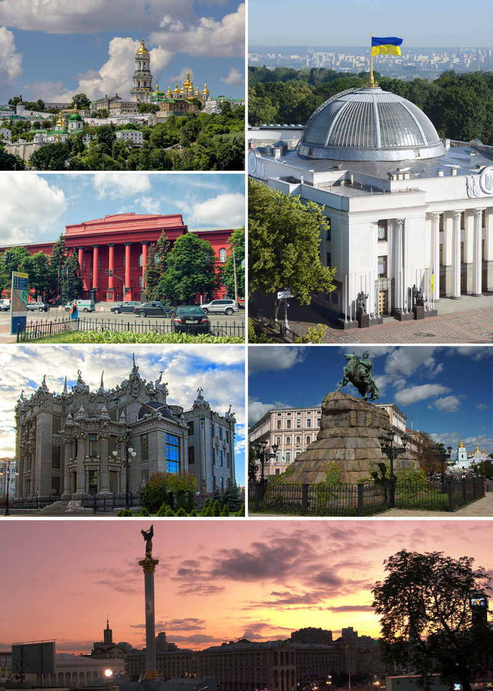

Kyiv is the capital and largest city of Ukraine, located in the north central part of the country on the Dnieper. The population in July 2015 was 2,887,974(though higher estimated numbers have been cited in the press),making Kiev the 7th most populous city in Europe.
Kiev is an important industrial, scientific, educational, and cultural centre of Eastern Europe. It is home to many high-tech industries, higher education institutions, and world-famous historical landmarks. The city has an extensive infrastructure and highly developed system of public transport, including the Kiev Metro.
The city's name is said to derive from the name of Kyi, one of its four legendary founders (see Name, below). During its history, Kiev, one of the oldest cities in Eastern Europe, passed through several stages of great prominence and relative obscurity. The city probably existed as a commercial centre as early as the 5th century. A Slavic settlement on the great trade route between Scandinavia and Constantinople, Kiev was a tributary of the Khazars, until seized by the Varangians (Vikings) in the mid-9th century. Under Varangian rule, the city became a capital of the Kievan Rus', the first East Slavic state. Completely destroyed during the Mongol invasion in 1240, the city lost most of its influence for the centuries to come. It was a provincial capital of marginal importance in the outskirts of the territories controlled by its powerful neighbours; first the Grand Duchy of Lithuania, followed by Poland and Russia.
The city prospered again during the Russian Empire's Industrial Revolution in the late 19th century. In 1917, after the Ukrainian National Republic declared independence from the Russian Empire, Kiev became its capital. From 1921 onwards Kiev was a city of the Ukrainian Soviet Socialist Republic, which was proclaimed by the Red Army, and, from 1934, Kiev was its capital. During World War II, the city again suffered significant damage, but quickly recovered in the post-war years, remaining the third largest city of the Soviet Union.
Following the collapse of the Soviet Union and Ukrainian independence in 1991, Kiev remained the capital of Ukraine and experienced a steady migration influx of ethnic Ukrainians from other regions of the country. During the country's transformation to a market economy and electoral democracy, Kiev has continued to be Ukraine's largest and richest city. Kiev's armament-dependent industrial output fell after the Soviet collapse, adversely affecting science and technology. But new sectors of the economy such as services and finance facilitated Kiev's growth in salaries and investment, as well as providing continuous funding for the development of housing and urban infrastructure. Kiev emerged as the most pro-Western region of Ukraine where parties advocating tighter integration with the European Union dominate during elections
The city prospered again during the Russian Empire's Industrial Revolution in the late 19th century. In 1917, after the Ukrainian National Republic declared independence from the Russian Empire, Kiev became its capital. From 1921 onwards Kiev was a city of the Ukrainian Soviet Socialist Republic, which was proclaimed by the Red Army, and, from 1934, Kiev was its capital. During World War II, the city again suffered significant damage, but quickly recovered in the post-war years, remaining the third largest city of the Soviet Union.
| Go to another page |
|---|
|
click
a link
|